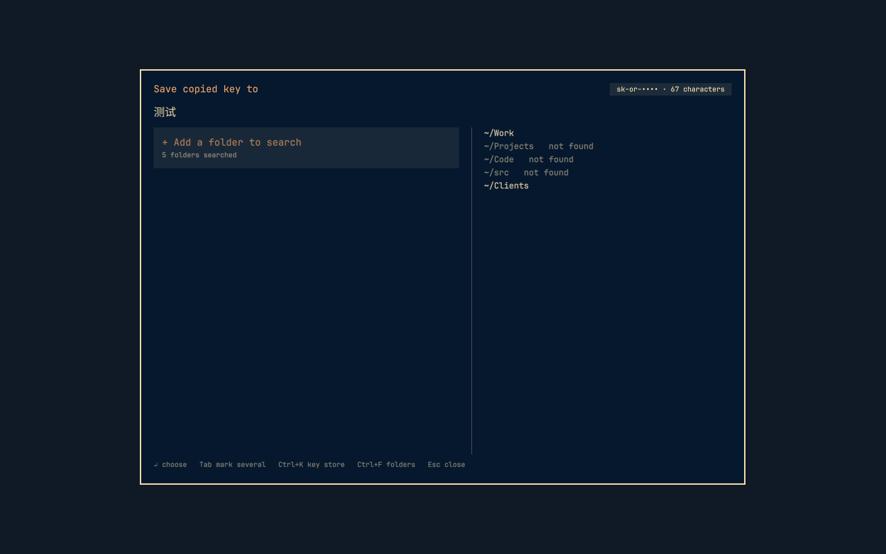

01 Input methods come from Omarchy. A plugin can still shut them out
Omarchy 4 ships the Fcitx5 input-method system, ready-made setups for Pinyin, Zhuyin, Cangjie, Japanese and Korean, the Super+I switch, and the right character forms for each. That is what DHH's "All setup" means. A plugin never brings an input method of its own. It can block one in two ways, though. A text line built from individual keypresses never receives what the input method composes. And a shortcut that matches on a typed letter is dead on any keyboard layout that types another script.
Measured by scripts/ime-probe on a private virtual display with its own Fcitx5 and D-Bus session, so nothing reached your desktop (Qt 6 on X11, fcitx5 5.1.23). Wayland, where the shell actually runs, was not measured.
02 The secrets card now takes Chinese and works on Russian, and it's merged
The audit flagged the card's search line as keypress-built. It now uses Omarchy's own FilterInput, the pattern the Omarchy menu ships, and its letter shortcuts fall back to the key's position when a layout types another script. Two new on-screen checks type real Pinyin into the card and press Ctrl+F on a Russian layout. All three new checks fail on the old card and pass on the new one. All 32 on-screen checks pass, along with the 111 helper checks and 63 catalog and model checks. Pull request, merged. Your shell needs a restart to load it.

A real screenshot from the isolated run, with made-up projects.

Left as is: French and Brazilian Portuguese lack the plural form those languages use for round millions. Omarchy shows the ordinary plural there, and the card never counts a million projects.
03 The first run corrected the skill in four places
The audit rejected es.json, but Omarchy loads it as the fallback for Mexican Spanish. It called a missing French plural an error, but Omarchy falls back to the ordinary plural there, so it is now a warning unless everyday counts are affected. The reference told authors to match shortcuts by event.key, which the measurement in Figure 01 shows also breaks. And it said upstream had fixed shortcuts across layouts, when that pull request is still a draft with open regressions. All four are fixed, and the probe now ships with the skill. Two traps from the first probe run are written down: Qt sends its log to the system journal, so the probe saw nothing until that was forced to stderr, and xdotool silently remaps a key so it types Latin letters on a Russian layout.
04 Reel: its whole keyboard is dead on Cyrillic, and the fix waits for your read
Reel is keyboard-first: r records, d discards, x trashes, h/j/k/l move. Each one matches the typed letter, so on a Russian, Greek, Hebrew or Arabic layout none of them fire. The fix is one tested pure function and a one-line change, per their contributing guide. It is on our fork, and the upstream pull request form is open in Chrome, filled in and not submitted.
Weigh this: for non-Latin layouts, d and x start working where they did nothing before. The docs already promise those keys, and typing in a field can't reach them, but the draft says so out loud. Full translation is left out on purpose: the draft asks the maintainer first.
Not tested: the live panel on Wayland. Check the Chrome form's body arrived; it was hidden from me.